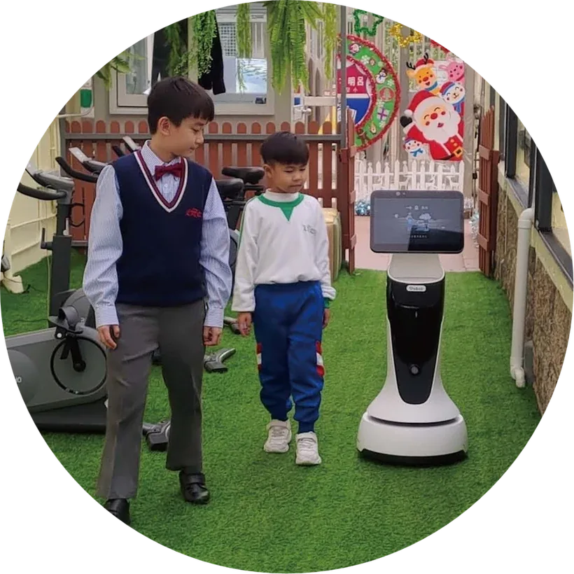
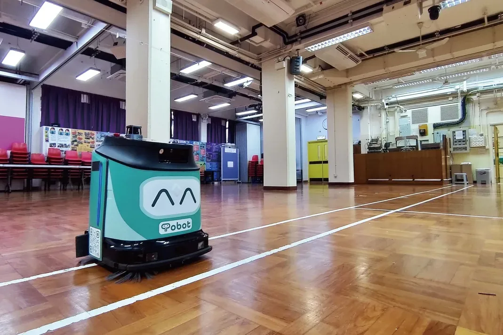
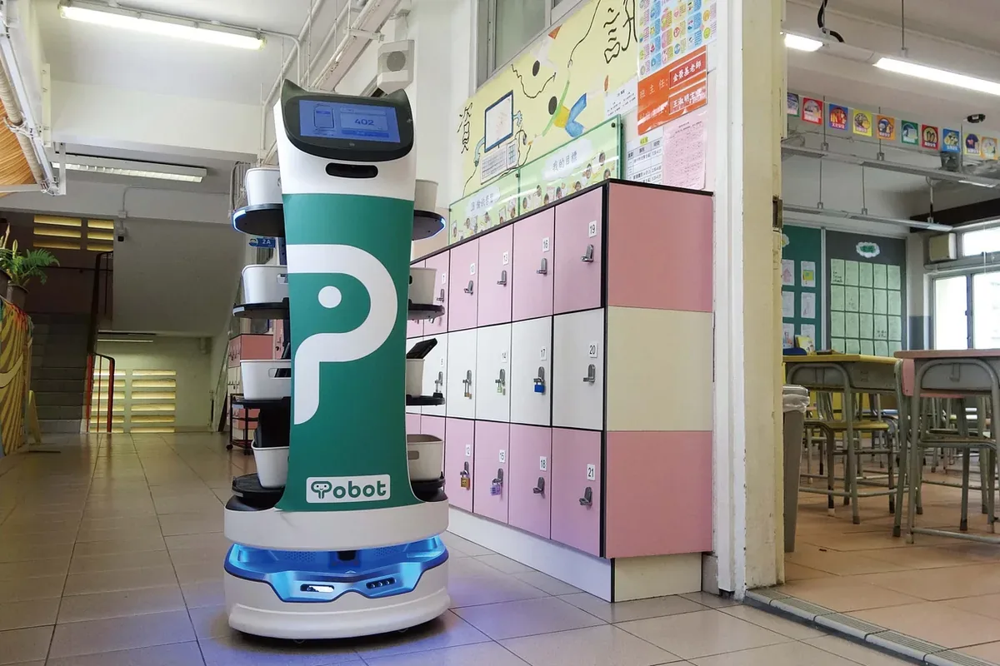
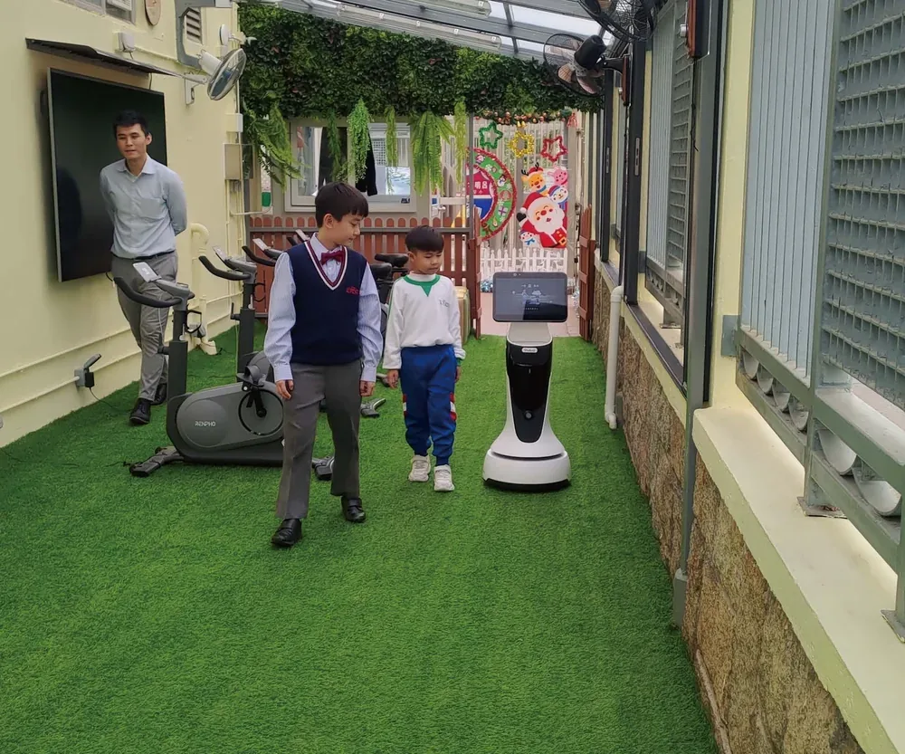
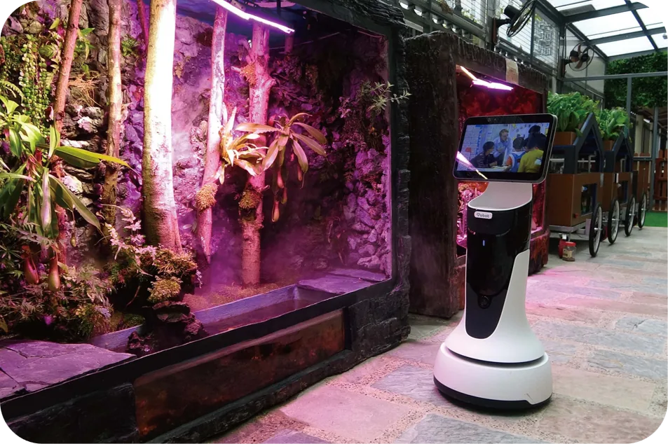
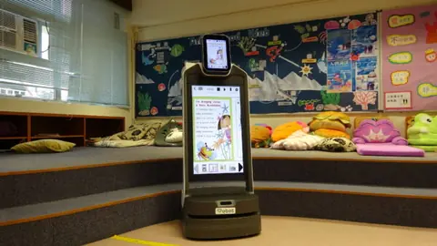

01
清潔安排難以配合課堂與活動
走廊、大堂、禮堂及公共空間需要反覆清潔，但人手及可用時段有限。
BottiZ 如何協助按區域、路線及校園時段安排清潔任務，支援不同大小及室內外空間。
由校園清潔、教材及物資運送，到訪客接待、智能圖書及互動學習，BottiZ 從學校日常流程出發，按場地、時段及人手需要配置合適方案。

BottiZ 先從校園常見任務與人手壓力出發，協助學校釐清最需要改善的環節，再規劃合適的機械人配置與使用方式。
走廊、大堂、禮堂及公共空間需要反覆清潔，但人手及可用時段有限。
校務處、教員室、課室及活動場地之間，經常需要運送文件、教具及物資。
校園介紹、方向查詢及活動資訊往往需要教職員重複回應。
場地、路線、網絡及使用流程不同，單靠產品規格難以判斷是否適合。
以下以校園一天的不同時段示範應用情境，讓校方更容易理解機械人在日常流程中的實際角色與分工。
清潔機械人完成走廊、大堂及公共空間的例行清潔。
教材配送機械人協助運送文件、圖書、教具及日常物資。
互動機械人支援圖書介紹、學生導賞、語言表達及校本內容。
提供訪客接待、校園介紹、活動資訊及場地指引。
可先按校園常見任務了解應用方向，再查看對應機型、部署方式及示範安排，評估是否適合校內實際流程。




由到校勘察、方案配置、實機示範，到培訓及售後支援，協助學校按實際需要逐步部署，讓機械人真正融入校園運作。
以下為 BottiZ 校園方案中的機型。規格及詳情請查看各產品頁。


機械人不是取代校園團隊，而是承接重複、耗力及可標準化的工序，讓人力回到更需要判斷、溝通與照顧的工作。
分擔長距離搬運、固定路線清潔及反覆來回，協助降低工友的體力負擔。
減少推拉重物、長時間彎腰及在戶外或濕滑區域持續工作的需要。
按預設路線、時段及區域執行任務，有助減少遺漏並保持服務一致。
加快教材、文件及物資在校內流轉，讓教職員減少非教學性來回。
結合校園導賞、圖書內容、語言互動及機械人課程，提升參與感與科技素養。
將人工智能、自主導航及服務機械人應用於真實校園，展示創新及科技教育成果。

不會。機械人承接重複、耗力的工序，教學、照顧與判斷仍由教職員負責，實際分工會在到校勘察後與校方確認。
可以。學校可先預約免費校園示範，在真實場地了解操作及效果，再討論部署方式。
BottiZ 會到校勘察路線、通道、地面、網絡及人流，並與校方確認使用時段與負責同事，再建議機型及配置。
勘察時會評估人流與路線，部署前先作測試，並為教職員提供使用培訓；日常保養與技術支援由本地團隊跟進。
建議先從校園任務出發，例如清潔、運送、接待或互動學習，再按場地大小與使用時段配置機型，詳見本頁「校園機械人一覽」。
人手難請，公共空間人流複雜。
了解物業管理方案 →搬運與配送佔去護理人員照顧的時間。
了解醫療及院舍方案 →巡邏範圍大、夜更長，容易疲勞與遺漏。
了解保安及巡邏方案 →請人難、留人難，又擔心買了用不上。
了解商戶及企業主方案 →入伙後才發現電梯、通道及充電位沒有預留。
了解發展商方案 →告訴我們希望改善的區域、日常工作及校園時段，團隊會先了解場地，再建議合適機型、部署方式及示範方向。
為教育、商業、醫療及基礎設施提供清潔、配送、接待、教學及巡邏等全場景機械人整合方案。